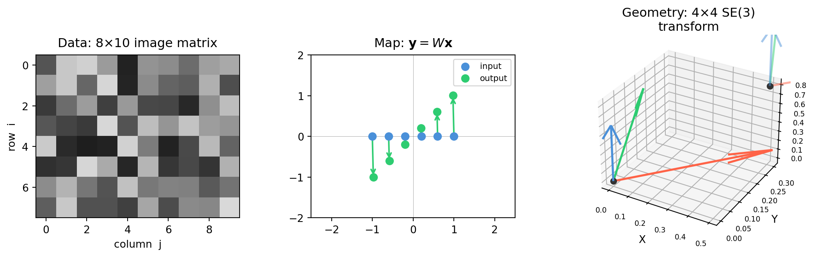

Every technique in this book — whether you are calibrating a camera, fitting a model to sensor data, or finding the dominant direction of motion in a point cloud — reduces to one of three fundamental problems:
#
Problem
Notation
When it arises
1
Exact solve
\(A\mathbf{x} = \mathbf{b}\)
Exactly \(n\) independent constraints for \(n\) unknowns
2
Least squares
\(\min\lVert A\mathbf{x} - \mathbf{b} \rVert\)
More measurements than unknowns; best-fit solution
3
Eigenvalue
\(A\mathbf{v} = \lambda\mathbf{v}\)
Find directions the matrix only stretches, never rotates
Every subsequent chapter deepens one of these. Let us visit each one now with a concrete example, just enough to make the shape of the problem recognizable.
1.1.1 Problem 1: \(A\mathbf{x} = \mathbf{b}\) — Solve Exactly
The situation. You have \(n\) unknowns and exactly \(n\) independent constraints. There is precisely one answer.
Where it appears.
Trilateration: A mobile robot receives distance measurements from three beacons at known locations. Each measurement constrains the robot to a circle. Two circles intersect at (at most) two points; a third resolves the ambiguity. After linearizing, you solve a \(3 \times 2\) system — but the core is still \(A\mathbf{x} = \mathbf{b}\).
Frame conversion: Given a 3-D point expressed in camera coordinates, compute the same point in world coordinates. The conversion is a matrix equation, solved in one step.
Inverse kinematics (simplified): Given a desired end-effector position for a 2-DoF planar arm, find the two joint angles that achieve it.
Worked example. Two walls of a warehouse are equipped with ultrasonic sensors. From the signal travel times you derive two distance constraints on the robot’s \((x, y)\) position:
\[\begin{bmatrix} 2 & -1 \\ 1 & 3 \end{bmatrix}
\begin{bmatrix} x \\ y \end{bmatrix}
= \begin{bmatrix} 3 \\ 10 \end{bmatrix}\]
import numpy as npA = np.array([[2.0, -1.0], [1.0, 3.0]])b = np.array([3.0, 10.0])x = np.linalg.solve(A, b)print(f"Robot position: x = {x[0]:.4f}, y = {x[1]:.4f}")residual = np.linalg.norm(A @ x - b)print(f"Residual ||Ax - b|| = {residual:.2e}")# Residual ≈ machine epsilon — this is an exact solve
Robot position: x = 2.7143, y = 2.4286
Residual ||Ax - b|| = 4.44e-16
The residual is essentially zero — floating-point machine epsilon. That is what exact solve means. Notice that numpy.linalg.solve does not check whether a unique solution exists; you must do that yourself (Chapter 3 shows how).
1.1.2 Problem 2: \(\min\lVert A\mathbf{x} - \mathbf{b} \rVert\) — Fit to Noisy Data
The situation. You have more equations than unknowns (\(m > n\), overdetermined). No exact solution exists — the measurements contradict each other slightly because of noise. Find the \(\mathbf{x}\) that minimizes total squared error.
Where it appears.
Camera calibration: 60 checkerboard corners, 6 unknown pose parameters per image. Minimize the reprojection error over all corners.
LIDAR plane fitting: 10,000 range points; fit a single plane (\(n = 3\) parameters). Far more data than unknowns — use them all to fight noise.
Any regression: Predict crop yield from sensor readings. More data points than model parameters is good; it makes the estimate robust.
Why not just pick two equations and solve exactly? Any two equations give an exact solution, but a different pair gives a different answer. Least squares uses all measurements simultaneously, weighting each equally, and finds the single \(\mathbf{x}\) that is closest to satisfying them all.
Worked example. A temperature sensor drifts linearly over time. We model the temperature as \(T(t) = mt + c\) and want to recover \(m\) and \(c\) from 20 noisy readings.
import numpy as nprng = np.random.default_rng(42)t = np.linspace(0, 10, 20)noise = rng.normal(0, 0.4, size=20)T_obs =2.3* t +1.7+ noise # true: m = 2.3, c = 1.7# Build A: each row is [t_i, 1]A = np.column_stack([t, np.ones(len(t))]) # shape (20, 2)# Solve: find [m, c] that minimises ||A @ [m,c] - T_obs||x, residuals, rank, sv = np.linalg.lstsq(A, T_obs, rcond=None)m_fit, c_fit = xprint(f"Fitted: m = {m_fit:.4f}, c = {c_fit:.4f}")print(f"True: m = 2.3000, c = 1.7000")print(f"Rank of A: {rank} (full rank = 2, good)")
Fitted: m = 2.3193, c = 1.5904
True: m = 2.3000, c = 1.7000
Rank of A: 2 (full rank = 2, good)
1.1.3 Problem 3: \(A\mathbf{v} = \lambda\mathbf{v}\) — Find Structure
The situation. You want the natural directions of a matrix — the vectors that a matrix only stretches or compresses, never rotates. These directions reveal the underlying geometry of the data or system.
Where it appears.
Principal Component Analysis (PCA): The eigenvectors of the data covariance matrix point in the directions of maximum variance. Used in dimensionality reduction, visualization, and anomaly detection.
Control stability: The eigenvalues of a robot controller’s state-transition matrix determine whether small errors decay to zero or grow without bound. \(|\lambda_i| < 1\) for all \(i\) means stable; any \(|\lambda_i| > 1\) means unstable.
Vibration modes: In a mechanical linkage, the eigenvectors of the stiffness matrix are the natural vibration modes — the shapes the structure prefers to oscillate in.
Worked example. A 2-D point cloud of robot position estimates has been contaminated by correlated noise. The covariance matrix captures the shape and orientation of the noise ellipse.
import numpy as np# Covariance matrix of 2-D position estimatesSigma = np.array([[3.0, 1.5], [1.5, 1.0]])# eigh is for real symmetric/Hermitian matrices (guaranteed real eigenvalues)eigenvalues, eigenvectors = np.linalg.eigh(Sigma)print("Eigenvalues (variance along each principal axis):")print(eigenvalues)print("\nEigenvectors (columns = principal directions):")print(eigenvectors)# Verify: A v = λ vfor i inrange(2): v = eigenvectors[:, i] lam = eigenvalues[i] err = np.linalg.norm(Sigma @ v - lam * v)print(f"\n||Σ v{i} - λ{i} v{i}|| = {err:.2e}")
Eigenvalues (variance along each principal axis):
[0.19722436 3.80277564]
Eigenvectors (columns = principal directions):
[[ 0.47185793 -0.8816746 ]
[-0.8816746 -0.47185793]]
||Σ v0 - λ0 v0|| = 1.37e-16
||Σ v1 - λ1 v1|| = 2.22e-16
Eigenvectors reveal the noise ellipse orientation.
The table below maps every chapter to the problem it deepens:
Problem
Chapters
\(A\mathbf{x} = \mathbf{b}\)
2, 3, 5, 7, 9, 10, 11, 12
\(\min\lVert A\mathbf{x} - \mathbf{b} \rVert\)
15, 16, 17, 18, 22, 23
\(A\mathbf{v} = \lambda\mathbf{v}\)
13, 14, 19, 20, 24
Many chapters bridge two problems — SVD (Chapter 18) simultaneously provides the best low-rank approximation (Problem 2) and the principal directions (Problem 3). Lie groups (Chapter 24) generalize \(A\mathbf{x} = \mathbf{b}\) to curved manifolds. Whenever you feel lost, return to this table and ask: which of the three problems does this serve?
1.2 Matrices as Data, Maps, and Geometry
A matrix is just a rectangular array of numbers — but it plays three completely different roles in ML, CV, and robotics. Confusing the roles is a common source of bugs. This section gives you all three mental models up front.
1.2.1 Mental Model 1 — Matrix as Data
The most literal interpretation: a matrix is a table of measured values.
Grayscale image. A 480 × 640 grayscale image is a \(480 \times 640\) matrix. Entry \((i, j)\) is the intensity of the pixel at row \(i\), column \(j\), an integer in \([0, 255]\).
import numpy as npimport matplotlib.pyplot as plt# Simulate a small grayscale image (in practice: cv2.imread or plt.imread)rng = np.random.default_rng(0)img = rng.integers(0, 256, size=(6, 8), dtype=np.uint8)print(f"Type: {type(img)}")print(f"Shape: {img.shape} ← (rows, cols) = (height, width)")print(f"Dtype: {img.dtype}")print(f"\nPixel values:\n{img}")
Colour (RGB) image. Add a third axis: shape \((H, W, 3)\). Channel 0 is red, 1 is green, 2 is blue. This is technically a tensor (3-D array), but the 2-D slices are still matrices.
Point cloud. A collection of \(N\) 3-D points from a depth sensor is stored as an \(N \times 3\) matrix — one row per point, columns are \((x, y, z)\).
import numpy as nprng = np.random.default_rng(0)N =1000points_xyz = rng.standard_normal((N, 3)) # N × 3 matrixprint(f"Point cloud shape: {points_xyz.shape} ← (N_points, 3)")print(f"First three points:\n{points_xyz[:3]}")
Point cloud shape: (1000, 3) ← (N_points, 3)
First three points:
[[ 0.12573022 -0.13210486 0.64042265]
[ 0.10490012 -0.53566937 0.36159505]
[ 1.30400005 0.94708096 -0.70373524]]
The key insight: operations on data — crop, resize, blur, transform — almost always reduce to matrix arithmetic. When a convolution is slow, you are paying for matrix multiplications that have not yet been fused by your hardware.
1.2.2 Mental Model 2 — Matrix as Map (Function)
A matrix \(W \in \mathbb{R}^{m \times n}\) is a function that takes an \(n\)-dimensional vector and returns an \(m\)-dimensional vector:
The entire forward pass of this network is three matrix–vector multiplies. The backward pass (backpropagation) is three more. Linear algebra is not something used alongside deep learning — it is deep learning.
What each row of \(W\) does. Row \(i\) of \(W\) is a template (also called a filter or feature detector). The output \(y_i = W[i, :] \cdot \mathbf{x}\) is how strongly the input matches that template — a dot product, which Chapter 4 explains geometrically.
1.2.3 Mental Model 3 — Matrix as Geometry
A matrix can encode a rigid body transformation — a rotation, translation, scaling, or any combination — that moves 3-D objects in space.
Rotation matrix. A \(3 \times 3\) matrix \(R\) that rotates vectors without stretching them. Example: rotate 45° around the \(z\)-axis.
The 4×4 homogeneous transformation matrix. Rotation and translation together. This is the fundamental data structure of robotics — every robot joint, every camera pose, and every object in the scene is described by one of these.
import numpy as np# A camera located at [1, 2, 0.5] metres, rotated 30° around ztheta = np.pi /6# 30 degreesR = np.array([ [ np.cos(theta), -np.sin(theta), 0], [ np.sin(theta), np.cos(theta), 0], [0, 0, 1]])t = np.array([1.0, 2.0, 0.5]) # translation# Assemble 4×4 homogeneous matrixT = np.eye(4)T[:3, :3] = RT[:3, 3] = tprint("4×4 transformation matrix T:")print(T.round(4))# Transform a 3D point P = [0, 0, 3] (in local/camera frame)# to world frame using homogeneous coordinatesP_local = np.array([0.0, 0.0, 3.0, 1.0]) # homogeneous: append 1P_world = T @ P_localprint(f"\nPoint in local frame: {P_local[:3]}")print(f"Point in world frame: {P_world[:3].round(4)}")
4×4 transformation matrix T:
[[ 0.866 -0.5 0. 1. ]
[ 0.5 0.866 0. 2. ]
[ 0. 0. 1. 0.5 ]
[ 0. 0. 0. 1. ]]
Point in local frame: [0. 0. 3.]
Point in world frame: [1. 2. 3.5]
Why append a 1? The extra coordinate makes translation into a matrix multiply — without it, pure matrix multiplication cannot translate (it always maps zero to zero). Chapter 7 proves this and explains the full machinery of homogeneous coordinates.
C:\Users\james.choi\AppData\Local\Temp\ipykernel_8348\2920969.py:55: UserWarning: This figure includes Axes that are not compatible with tight_layout, so results might be incorrect.
fig.tight_layout()

1.2.4 Why Three Models?
The reason to keep all three in mind is that a single algorithm often involves all of them at once. Camera calibration, for example:
Stores the checkerboard corner coordinates as a data matrix (\(N \times 3\)).
Applies the projection matrix as a map from 3-D world to 2-D pixel coordinates.
Expresses the camera’s position and orientation as a geometric\(4 \times 4\) transform.
If you only think “matrix = table of numbers,” the projection step looks magical. If you only think “matrix = function,” you lose track of what the columns of \(K\) mean physically. Fluency means switching between the three views fluidly.
1.3 A Reading Map for ML, CV, and Robotics
This book is structured to be read cover-to-cover or used as a reference. The following map tells you which chapters are load-bearing for each field so you can prioritize intelligently.
1.3.1 Chapter Importance by Field
The table below rates each chapter on a three-star scale for the three target fields. ★★★ = essential foundation; ★★ = strongly recommended; ★ = useful but skippable on a first pass.
Ch
Title
ML
CV
Robotics
Core Concept
1
Why Linear Algebra?
★★★
★★★
★★★
Orientation and mental models
2
Systems of Linear Equations
★★
★★
★★★
\(A\mathbf{x}=\mathbf{b}\); sensor fusion
3
Row Reduction and Echelon Forms
★★
★★
★★★
Rank, null space, observability
4
Vectors in ℝⁿ
★★★
★★★
★★★
Dot product, basis, coordinates
5
Matrix Equations and Column Space
★★★
★★
★★
Feature collinearity, block matrices
6
Linear Transformations
★★
★★★
★★
Image warping, change of basis
7
Affine & Homogeneous Coordinates
★
★★★
★★★
Rigid body representation
8
Rotations in 3D
★
★★★
★★★
SO(3), Euler, quaternions
9
Rigid Body Kinematics
★
★★
★★★
SE(3), FK, velocity kinematics
10
Camera Models
★
★★★
★★
Intrinsics, distortion, projection
11
Projective Geometry
★
★★★
★
Homography, lines at infinity
12
LU, QR, and Cholesky
★★★
★★
★★★
Structured solvers, stability
13
Eigenvalues and Eigenvectors
★★★
★★
★★★
Spectral decomposition
14
Diagonalization
★★★
★
★★
Matrix powers, Markov chains
15
Norms and Distances
★★★
★★★
★★
Loss functions, regularization
16
Orthogonality
★★★
★★
★★★
Projections, Gram-Schmidt
17
Least Squares
★★★
★★★
★★★
The workhorse of applied math
18
SVD
★★★
★★★
★★★
Low-rank approx, pseudoinverse
19
Covariance Matrices
★★★
★★
★★★
Uncertainty representation
20
PCA
★★★
★★
★
Dimensionality reduction
21
Matrix Calculus
★★★
★★
★★
Backprop, gradient derivation
22
Jacobians and Linearization
★★
★★
★★★
Velocity kinematics, EKF
23
State Estimation
★★
★★
★★★
Kalman filter, sensor fusion
24
Lie Groups and Lie Algebras
★
★★
★★★
Optimization on manifolds
25
Epipolar Geometry
★
★★★
★★
Stereo, structure-from-motion
1.3.2 Fast Tracks
If you are working in one specific field, these reading orders let you build fluency quickly before circling back for depth.
After this track you can implement backpropagation from scratch, understand why batch normalization works, and read papers that use SVD-based compression.
After this track you can implement a full-body kinematic solver, write an EKF for IMU/GPS fusion, and understand why Lie groups replace Euler angles in modern motion planning.
1.3.3 How Chapters Depend on Each Other
The dependency graph below is a simplified guide — you can read ahead and return, but these are the conceptually critical prerequisites.
Appendix F — tensors and index notation for readers who need to read ML papers
1.4 Python Setup
All code in this book is Python 3.10 or later. Every code block is self-contained and executes directly inside the rendered book via Quarto’s Jupyter engine.
The three operations you will use in nearly every chapter:
import numpy as np# 1 — Creating arraysA = np.array([[1, 2], [3, 4]], dtype=float) # from nested listv = np.array([5.0, 6.0])I = np.eye(3) # identity matrixZ = np.zeros((4, 4)) # zero matrix# 2 — Matrix multiplication (always use @ for matrices, not *)y = A @ v # matrix-vector product, shape (2,)B = A @ A # matrix-matrix product, shape (2,2)s = v @ v # dot product when both are 1-D, returns scalar# 3 — Solving linear systemsb = np.array([1.0, 2.0])x = np.linalg.solve(A, b) # exact solve: A x = bxp, res, rank, sv = np.linalg.lstsq(A, b, rcond=None) # least squaresprint(f"A @ x = {A @ x} (should equal b = {b})")print(f"Condition number: {np.linalg.cond(A):.2f}")
A @ x = [1. 2.] (should equal b = [1. 2.])
Condition number: 14.93
Shape discipline. NumPy makes it easy to confuse 1-D arrays (n,) with 2-D column vectors (n, 1). This book always uses 1-D arrays for vectors and calls out the shape explicitly in comments.
import numpy as np# 1-D array ← used throughout this book for vectorsv1 = np.array([1.0, 2.0, 3.0]) # shape (3,)# 2-D column vector ← only when matrix algebra requires itv2 = v1.reshape(-1, 1) # shape (3, 1)v3 = v1[:, np.newaxis] # same thing, shape (3, 1)print(f"1-D: {v1.shape} 2-D column: {v2.shape}")
1-D: (3,) 2-D column: (3, 1)
1.4.4 Code Conventions Used in This Book
Convention
Meaning
A, B, R, W
matrices (capital letters)
x, y, b, v
vectors (lowercase letters)
n, m, k
integer dimensions
rng = np.random.default_rng(seed)
reproducible random state
# shape (m, n)
comment after every array creation
round(4)
limit print noise in examples
Plot functions in this book follow this template — light mode, inline output:
Quarto captures the plt.show() output and renders it inline in the book.
1.4.5 Downloading the Datasets
Several chapters use real datasets (depth images, point clouds, calibration targets, IMU logs). Appendix A contains the full download instructions and directory layout. For now, all you need to know is that when a code block references a file such as data/realsense_depth.png, you will find the download command for that file in Appendix A.
1.5 Exercises
Work through these before reading the solutions. They are designed to expose the assumptions that most people hold silently — and get wrong.
1.1 You call numpy.linalg.solve(A, b) on a \(2 \times 2\) system and get a numerical answer. How do you know whether the answer is correct? What specific number should you compute, and what threshold should alarm you?
1.2 A dataset has 100 observations and 50 features. You want to fit a linear model. Write down the matrix dimensions of \(A\), \(\mathbf{x}\), and \(\mathbf{b}\) in the least-squares formulation \(\min \|A\mathbf{x} - \mathbf{b}\|\). Is the system overdetermined, underdetermined, or square?
1.3 Consider the \(2 \times 2\) rotation matrix \[R = \begin{pmatrix} \cos\theta & -\sin\theta \\ \sin\theta & \cos\theta \end{pmatrix}\] Without using Python, compute \(R^T R\). What does your answer tell you about how rotation matrices transform lengths?
1.4 A neural network’s first layer maps 512-dimensional inputs to 128-dimensional outputs. Write this as \(\mathbf{y} = W\mathbf{x} + \mathbf{b}\). What is the shape of \(W\)? If you process a mini-batch of 32 samples simultaneously, what shape is the input matrix \(X\), and how does the equation change?
1.5 The mental-model-2 section says “row \(i\) of \(W\) is a template.” Using the matrix \[W = \begin{pmatrix} 1 & 0 \\ 0 & 1 \\ 1 & 1 \end{pmatrix}, \quad
\mathbf{x} = \begin{pmatrix} 3 \\ 5 \end{pmatrix}\] compute \(W\mathbf{x}\) by hand. Interpret each output as a dot product with a row template. What does each row “detect”?
1.6(Conceptual) The 4×4 homogeneous transformation code in §1.2 appends a 1 to 3-D points before multiplying by \(T\). If you accidentally appended 0 instead of 1, what part of the transformation would be lost? Why?
1.7(Harder) You have two matrices \(A \in \mathbb{R}^{3 \times 5}\) and \(B \in \mathbb{R}^{5 \times 2}\). Is the product \(AB\) defined? What is its shape? Now someone tells you \(AB = C\) and asks you to solve for \(B\) given \(A\) and \(C\). Is this always possible? When is it not?
The condition number \(\kappa(A) = \|A\| \cdot \|A^{-1}\|\) tells you how many digits of accuracy you lose. A rough rule: if \(\kappa \approx 10^k\), you lose about \(k\) decimal digits from the machine precision of \(\approx 10^{-16}\).
\(\kappa < 100\): safe
\(\kappa \sim 10^6\): lose ~6 digits — answers are accurate to ~10 significant figures in double precision
\(\kappa > 10^{12}\): alarm — results may be meaningless
Always compute np.linalg.cond(A) before trusting a linear solve. Also verify np.linalg.norm(A @ x - b) is near machine zero (\(< 10^{-10}\) for double).
Solution 1.2
The least-squares setup for 100 observations, 50 features:
\(A \in \mathbb{R}^{100 \times 50}\) — design matrix: one row per observation, one column per feature
\(\mathbf{x} \in \mathbb{R}^{50}\) — the coefficient vector (what we solve for)
\(\mathbf{b} \in \mathbb{R}^{100}\) — the target vector (one observed value per row)
The system is overdetermined: there are 100 equations but only 50 unknowns. No exact solution exists in general, so we minimize \(\|A\mathbf{x} - \mathbf{b}\|^2\).
This means \(R^T = R^{-1}\) — rotation matrices are orthogonal. An orthogonal matrix preserves inner products: \(\|R\mathbf{v}\|^2 = (R\mathbf{v})^T(R\mathbf{v})
= \mathbf{v}^T R^T R \mathbf{v} = \mathbf{v}^T \mathbf{v} = \|\mathbf{v}\|^2\). Rotation neither stretches nor compresses — it just changes direction.
The key point: W.shape is always (out_features, in_features) in PyTorch convention. When you see nn.Linear(512, 128), the stored weight matrix is \(128 \times 512\).
Row 1 = \([1, 0]\): detects the first component. Output 3 = “how much of \(x_1\) is present.”
Row 2 = \([0, 1]\): detects the second component. Output 5 = “how much of \(x_2\) is present.”
Row 3 = \([1, 1]\): detects the sum of both components. Output 8 = “total energy.”
This is the template interpretation: each row acts as a pattern, and the output is the dot product of the input with that pattern. In a trained network, rows of \(W\) become learned feature detectors — edges, textures, semantic concepts — through gradient descent, not hand design.
With 1 (point): [1. 2. 3.5]
With 0 (direction): [0. 0. 3.]
The fourth column of \(T\) is \([t_x, t_y, t_z, 1]^T\). When the homogeneous coordinate is 1, it gets multiplied by the translation and added. When it is 0, translation is suppressed — you are treating the vector as a direction, not a point.
This is not just a book quirk: it is the standard convention in all robotics and graphics frameworks. Position vectors carry 1; direction vectors (surface normals, velocity vectors) carry 0. Mixing them up is a common source of silent numerical errors — the code runs, but the translated result is wrong by exactly the translation offset. Chapter 7 develops this distinction rigorously.
Solution 1.7
Is \(AB\) defined? Yes. \(A \in \mathbb{R}^{3 \times 5}\), \(B \in \mathbb{R}^{5 \times 2}\) — inner dimensions match (both 5). \(C = AB \in \mathbb{R}^{3 \times 2}\).
Can we solve for \(B\)? We need \(AB = C\), i.e., \(A\mathbf{b}_j = \mathbf{c}_j\) for each column \(j = 1, 2\). This is two systems of 3 equations in 5 unknowns — each system is underdetermined (more unknowns than equations).
import numpy as nprng = np.random.default_rng(42)A = rng.standard_normal((3, 5)) # shape (3, 5)B_true = rng.standard_normal((5, 2))C = A @ B_true # shape (3, 2)# Minimum-norm least-squares solution for each columnB_hat = np.linalg.lstsq(A, C, rcond=None)[0]print(f"A: {A.shape}")print(f"C: {C.shape}")print(f"B_hat: {B_hat.shape}")print(f"Residual A @ B_hat - C: {np.linalg.norm(A @ B_hat - C):.2e}")print(f"B_hat == B_true? Not in general — infinitely many solutions exist.")print(f"||B_true||: {np.linalg.norm(B_true):.4f}")print(f"||B_hat||: {np.linalg.norm(B_hat):.4f} ← lstsq returns minimum-norm solution")
A: (3, 5)
C: (3, 2)
B_hat: (5, 2)
Residual A @ B_hat - C: 6.58e-15
B_hat == B_true? Not in general — infinitely many solutions exist.
||B_true||: 2.1835
||B_hat||: 2.1062 ← lstsq returns minimum-norm solution
When is a unique solution impossible? When the system is underdetermined (more unknowns than equations) or when \(A\) does not have full column rank. Here, \(A\) is \(3 \times 5\) — it has at most rank 3, but \(B\) lives in \(\mathbb{R}^{5 \times 2}\), so there is a 2-dimensional null space of solutions for each column. The lstsq function returns the minimum-norm solution among the infinitely many that satisfy \(AB = C\) exactly.
This situation — underdetermined systems, null spaces, minimum-norm solutions — is central to Chapters 3, 16, 17, and 18.